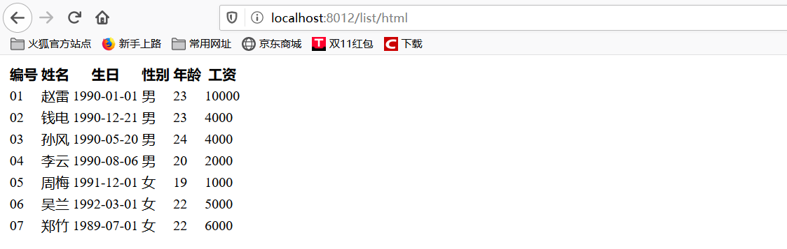
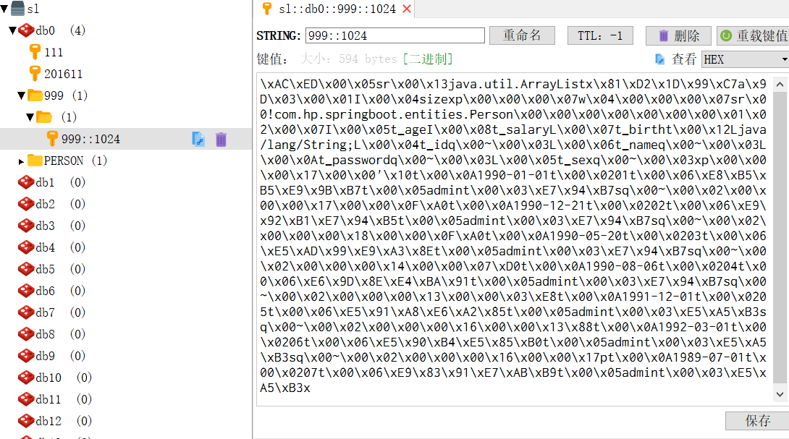
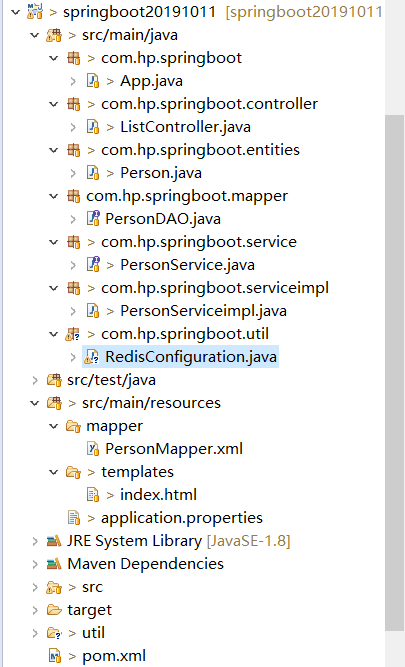

原文出处:本文由博客园博主SnakeStone提供。
原文连接:https://www.cnblogs.com/snakestone/p/11733742.html
原文连接:https://www.cnblogs.com/snakestone/p/11733742.html
一.背景
基于的Spring Boot的版本是2.1.3
二.整合
1.添加redis相关的maven依赖
<dependency>
<groupId>org.springframework.boot</groupId>
<artifactId>spring-boot-starter-data-redis</artifactId>
</dependency>2.在application.properties加入redis的相关配置
# Redis数据库索引（默认为0）
spring.redis.database=0
# Redis服务器地址
spring.redis.host=127.0.0.1
# Redis服务器连接端口
spring.redis.port=6379
# Redis服务器连接密码（默认为空），我的是123456
# spring.redis.password=
spring.redis.password=123456
# 连接池最大连接数（使用负值表示没有限制）
spring.redis.pool.max-active=200
# 连接池最大阻塞等待时间（使用负值表示没有限制）
spring.redis.pool.max-wait=-1
# 连接池中的最大空闲连接
spring.redis.pool.max-idle=10
# 连接池中的最小空闲连接
spring.redis.pool.min-idle=0
# 连接超时时间（毫秒）
spring.redis.timeout=50003.在启动类上加入@EnableCaching注解
@SpringBootApplication
@EnableCaching
public class App
{
public static void main( String[] args )
{
SpringApplication.run(App.class, args);
}
}4.在Service层的方法上加入@Cacheable(cacheNames = "999",key = "1024")
表示第一次查询会从数据库中查询数据，并同时将此方法所查询到的数据存入redis中。之后再调用此方法时，直接从redis缓存中取数据，不用再从数据库中查。
@Service
public interface PersonService {
@Cacheable(cacheNames = "999",key = "1024")
List<Person> getAll();
List<Person> getMan();
String getTest();
}5.调用该方法
@Controller
@RequestMapping("list")
public class ListController {
@Autowired
PersonService personservice;
@Autowired
Person person;
@Autowired
PersonDAO persondao;
@RequestMapping("/html")
public String getAll(Model model){
List<Person> list = personservice.getAll();
model.addAttribute("users",list);
return "index";
}
}6.通过浏览器访问，得到数据库中的数据

7.通过Redis Desktop Manager查看redis中的数据

8.发现Redis Desktop Manager中的数据不可读，我们做以下处理
新建一个RedisConfiguration类
@Configuration
public class RedisConfiguration{
/**
* 缓存管理器 (没有这个在redis中查看到的不是可读的字节数据)
*/
@Bean("jsonRedisCache")
public CacheManager cacheManager(RedisConnectionFactory redisConnectionFactory) {
//初始化一个RedisCacheWriter
RedisCacheWriter redisCacheWriter = RedisCacheWriter.nonLockingRedisCacheWriter(redisConnectionFactory);
//设置CacheManager的值序列化方式为json序列化
RedisSerializer<Object> jsonSerializer = new GenericJackson2JsonRedisSerializer();
RedisSerializationContext.SerializationPair<Object> pair = RedisSerializationContext.SerializationPair
.fromSerializer(jsonSerializer);
RedisCacheConfiguration defaultCacheConfig=RedisCacheConfiguration.defaultCacheConfig()
.serializeValuesWith(pair);
//设置默认超过期时间是30秒
defaultCacheConfig.entryTtl(Duration.ofSeconds(30));
//初始化RedisCacheManager
return new RedisCacheManager(redisCacheWriter, defaultCacheConfig);
}9.重新启动项目重新访问后
2.png)
三.总结
项目总体结构图
